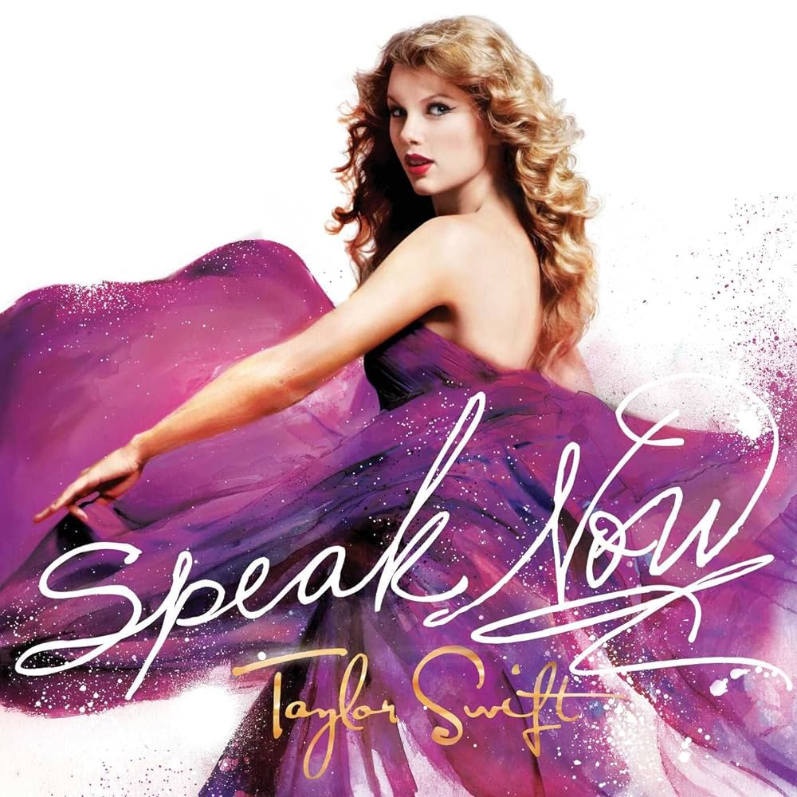
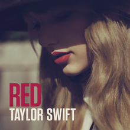

Taylor Swift's Albums in order
On this page, you can find every album Taylor Swift has released in her long career, including her re-released albums, 'Taylor's Version'. The albums are ordered from her very first release to the most recent one.
What is 'Taylor's Version'?
Background: Master Recordings Dispute
Taylor Swift's original master recordings, which are the initial studio recordings of her songs, were owned by her former record label, Big Machine Label Group. In 2019, it was publicly revealed that Big Machine had been acquired by Scooter Braun's Ithaca Holdings. This acquisition meant that Scooter Braun, a music executive with whom Taylor Swift had publicized disagreements, gained control over the majority of Swift's catalog, up to her album "Reputation," released in 2017.
Ownership and Control: Re-Recording Initiative
To regain control over her work and to maintain ownership of her music, Taylor Swift announced her intention to re-record her early albums. Re-recording allows her to create new master recordings for her songs, giving her ownership and control over these recordings. The new recordings are often referred to as "Taylor's Version."
Purpose of Re-Recording: Artist Control and Artistic Expression
The re-recording process not only addresses the ownership issue but also provides Taylor Swift with an opportunity to express herself artistically. She can make creative decisions about the songs, potentially updating arrangements, reinterpreting lyrics, or adding new elements. This allows her to present the songs in a way that aligns with her current artistic vision.
Release Strategy: Parallel Releases and Fan Engagement
Taylor Swift has been strategically releasing her re-recorded albums in parallel with the original versions. This provides fans with the choice to support her by listening to the new recordings, rather than the versions owned by Scooter Braun. Swift has encouraged her fans to embrace the "Taylor's Version" releases as a way of supporting her as an artist. She does so by including unreleased songs 'from the vault' as an incentive for fan support.
Fearless (Taylor's Version)" and Beyond
"Fearless (Taylor's Version)" was the first re-recorded album to be released, and it includes all the tracks from the original "Fearless" album along with additional songs that were not part of the original release. Subsequently, Swift has continued the re-recording process with other albums, including "Red (Taylor's Version)", "Speak Now (Taylor's Version)", and "1989 (Taylor's Version)" She is expected to release "reputation (Taylor's Version)" and "Taylor Swift (Taylor's Version)" as well, but the release dates are not confirmed yet.
Taylor Swift (Debut Album)

Fearless
Speak Now
Red

1989

reputation

Lover

folklore

evermore

Fearless (Taylor's Version)

Red (Taylor's Version)

Midnights
Speak Now (Taylor's Version)

1989 (Taylor's Version)